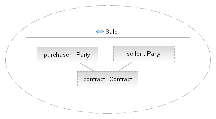

| Задача: Identify Commonality and Variability |
|
 |
| This task is applicable to a number of analysis and design elements where factoring out the variability in such elements and factoring in the commonality makes for a more robust and flexible result. |
| Дисциплины: Анализ и проектирование |
|
Назначение
To analyze the provided model elements and identify which of these elements are common to different applications and
separate them from those elements which vary in different applications. By identifying those elements that vary by
application we are able to explicitly model the kinds of variability and document them for clients of the model
elements.
|
Взаимосвязи
| Роли | Основной исполнитель:
| Дополнительные исполнители:
|
| Входы | Обязательный:
| Необязательный:
|
| Выходы |
|
Основное описание
This task may be applied to any analysis or design model where elements of the model may benefit from the techniques
described here. The techniques are derived from experience in both Product Line Engineering, where the common elements
are what unite products within the product line and the variability is what distinguishes the products from each other,
and Pattern development where common elements are the structure of the pattern and the variablility is used to define
the parameters to the pattern.
The approach is first to identify elements of the design that will be common to all applications of the element, then
to identify the elements that will vary in each application, and finally to document the variability (here different
approaches are used by different domains).
Example
In the following class diagram we see the elements of a legal contract, identifying that the contract is between two or
more parties. In identifying the common elements we see that the core elements are the structure of the contract itself
and the different relations to the parties.
However, a legal contract may be between different people, organizations or government agencies and so we note
that Party is a variable element by type. In documenting this we define a type hierarchy for Party and
also denote Part as an abstract class so that concrete types must be used in an actual design.
|
Шаги
|
Identify Common and Variable Elements
Identifying the elements of a design that do not change when used in different situations is often best done in an
iterative fashion. Using a set of scenarios, create instance diagrams and note when comparing the instance diagrams for
different scenarios which elements are common in all cases. The more scenarios available, obviously the more data
points are available to you and therefore you are able to validate early results and assumptions.
In describing the common elements in a model, it is often valuable to provide some form of encapsulating element to
separate these elements from the rest of the design. The choice of encapsulation technique is obviously dependent on
the context, but may be:
-
Introduction of a package to own the elements, this only changes the ownership of the elements but not the
relationship between the elements or elements outside the package - this is most commonly applied to analysis
models.
-
Introduction of a component to own the elements, this not only changes the ownership but also introduces a formal
encapsulation so you may choose to define an interface exposing the relevent elements to the outside.
-
Introduction of a UML 2.0 collaboration allows the common elements to be defined as part of the composite structure
of the collaboration as well as the variable elements as roles; later on a binding may be made from the variable
element roles to concrete elements. This is a common approach to defining design patterns in UML. Note that a
collaboration does not own the elements themselves, only roles corresponding to the elements.
-
Introduction of a templated class where the template corresponds to the type of the variable element(s); this is a
common approach in languages such as Ada, C++, Eiffel and now Java which support generic programming.
-
You may simply choose to use a visual cue. It is common, for example, to use a single diagram (as shown in the main
description) and to color the common and variable elements differently.
Example
In the case of our legal contract we choose to introduce a component that will own the elements, as shown in the figure
below.

|
Document Variability Forms
Variability itself takes a number of different forms, any of which may be appropriate and in some cases more than one
form is present in a given situation. Common kinds of variability are:
-
Variability by Type - for example, in the case of our legal contract the variability is based on
the type hierarchy used to represent the concept "Party"; this is a very common form and is easily described using
UML as a class diagram (as shown in the main description).
-
Variability by Role - in this case the type of the element is generally immaterial (or at least of
secondary importance); it is the role it plays that is of value. This type of variability is often found in
pattern development where the pattern should be possible to apply to the broadest set of possibilities and so the
parameters to the pattern are defined in terms of the roles the provided elements play only.
-
Variability of Implementation - In this case the element provided is required to perform
some behavior and so needs to implement a given interface (or more formally a protocol) to be applicable. In such a
case it usual that the container of the common elements describes the interface and either has a template
parameter of the interface type or to require the interface.
Examples
The following diagram demonstrates the notion of variability by role, where we have a new collaboration "Sale" which
denotes the relationship between a seller and purchaser as parties to a contract. In UML it is then possible to create
a Collaboration Occurance which binds the roles "purchaser" and "seller" to actual model elements.

Alternatively, let us look at the process of sale using an escrow service. We capture the required capabilities of any
escrow service as an interface, with a set of operations corresponding to the responsibilities we expect the escrow
service to perform. With this we create a templated collaboration where we use the escrow interface as the type of the
template parameter. Now it is possible to instantiate the template providing any class or component that realizes the
IEscrowService interface.

Finally, we might more simply use a component (or class) to contain our common elements and have it require the
IEscrowService interface using the UML 2.0 <<use>> relationship as shown in the diagram below. This
approach is certainly valuable at a design level as it is also a common programming approach in Component-Based
Development or even just in languages such as Java.

The choice of technique will, as usual, depend on the situation including considerations such as:
-
The kind of variability being expressed, as we have seen above.
-
Whether the element are a part of an analysis, design or implementation model.
-
The skills and expectations of the stakeholders in the model.
|
|
Дополнительные сведения
© Copyright IBM Corp. 1987, 2006. Все права защищены..
|
|